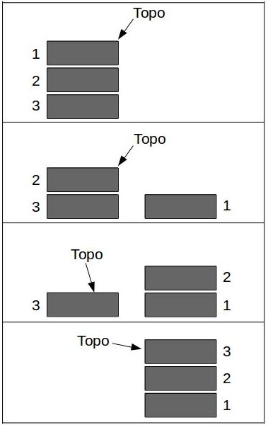

Informações

Trabalho Prático 1 realizado por Felipe Wu e Bruno Tissei, referente à disciplica de Algoritmos e Estruturas de Dados II do professor Elias P. Duarte Jr.
Entregue no dia 20 de novembro de 2015
Relatório
Decidimos organizar o código em vários arquivos para facilitar a leitura e separá-lo de acordo com o objetivo de cada implementação. O resultado final consiste em dois arquivos para cada tipo abstrato de dados, o header (.h) e a implementação em si (.c), pois dessa forma é possível integrar o projeto de forma mais organizada. Durante a implementação, percebemos que seria mais viável declarar todas as structs em um arquivo só (estruturas.h), resolvendo assim o problema da dificuldade de definir uma ordem de "includes" dos headers em outros arquivos. Também percebemos que não seria interessante incluir as bibliotecas padrões em todos os headers, portanto criamos um arquivo utils.h para definir constantes - até mesmo o tipo bool, true e false - e incluir bibliotecas que são usadas ao longo do código inteiro. Fizemos também um par de arquivos apenas para definir o log e suas ações, pois elas são bastante chamadas no programa. Tivemos cuidado na hora de comentar o código e nomear as variáveis e funções, para facilitar tanto na correção do trabalho quanto nos momentos que foi necessário reler o que já foi feito.
O programa apresenta implementações de três tipos abstratos de dados diferentes:
A função da lista no programa é descrever, de forma intuitiva, a organização de uma coleção de itens, no caso discos, que não dependem de uma ordem. Pelo fato de cada cliente possuir uma lista e de existir vários clientes, decidimos implementá-la utilizando a alocação dinâmica, pois dessa forma não é necessário alocar um grande bloco de memória para cada cliente. A operação removeLista, não recebe o registro anterior como vimos em aula, porque não há como saber qual é o elemento anterior ao que o usuário deseja remover, por isso decidimos sacrificar um pouco a eficiência e percorrer a lista inteira até encontrar o disco a ser retirado da lista, se não for encontrado a função retorna -2.0 e se a lista estiver vazia retorna -1.0, isso foi uma convenção criada para facilitar a "comunicação" com a função criarCliente no arquivo main.
Já a função da fila é armazenar clientes de modo a representar a ordem natural de organização de pessoas em espera. Implementamos essa estrutura de dados usando alocação estática pois ela não requer tantos elementos quanto a pilha, visto que a fila é esvaziada constantemente (quando os cliente são atendidos) e a pilha armazena os recibos durante a execução inteira do programa. O vetor da fila foi implementado circularmente devido aos problemas de manter a fila funcionando conforme novos elementos são enfileirados e desenfileirados como vimos em aula.
A implementação da pilha está como alocação dinâmica, pois, como mencionado anteriormente, ela armazena os recibos para "sempre", necessitando de uma quantidade de memória indefinível em tempo de compilação. Na função invertePilha decidimos usar uma pilha auxiliar, porque dessa forma é possivel aproveitar o código disponível no mesmo arquivo e não é necessário alocar uma fila inteira estaticamente apenas para isso. O que fizemos foi alocar uma outra pilha dinamicamente, passar todos elementos da pilha original para a nova e depois trocar o apontador que indica o topo. Isso gerou um problema: toda vez que a lista era invertida todas as operações internas (push, pop, inicPilha) apareciam no log, a solução foi passar por parâmetro um valor booleano (logbool) que indica se é necessário relatar.

Todo o programa é iniciado no arquivo main e para a compilação, em vez de usarmos um makefile, optamos por um script shell simples. As funções criarFila e criarCliente recebem as entradas dos usuários e executam os comandos correspondentes elas imprimem o menu de opções várias vezes para que o usuário não precise lembrar dele caso ele saia do alcance da tela. Decidimos que o conteúdo do log seria diferente do que aparece para o usuário, tornando aquele um arquivo "interno" que só é disponível no final da execução do programa. O texto do log foi baseado no exemplo encotrado no site do professor e expressa com clareza as ações feitas pelo usuário durante a execução do programa. Os logs e os históricos do usuário correspondentes estão na página do trabalho na seção "logs".
Durante o desenvolvimento do programa nos deparamos com o caso em que o nome do artista ou do album contem mais de uma palavra, o que foi resolvido com um simples fgets para ler uma linha inteira, porém essa função insere um '\n' no final da string, por isso tivemos que trocá-lo por um '\0'. Mas o fgets apresentou problemas na hora da leitura devido ao buffer cheio gerado pelo scanf anterior, isso foi resolvido com a função cleanBuffer, que simplemente lê a linha inteira usando um getchar esvaziando o buffer. No log, foi necessário adicionar uma string auxiliar para passar os valores para o imprimeLog, para isso usamos o sprintf, que imprime uma string com parâmetros dentro de outra string (no nosso caso straux).
main.c
main.h
crialog.c
crialog.h